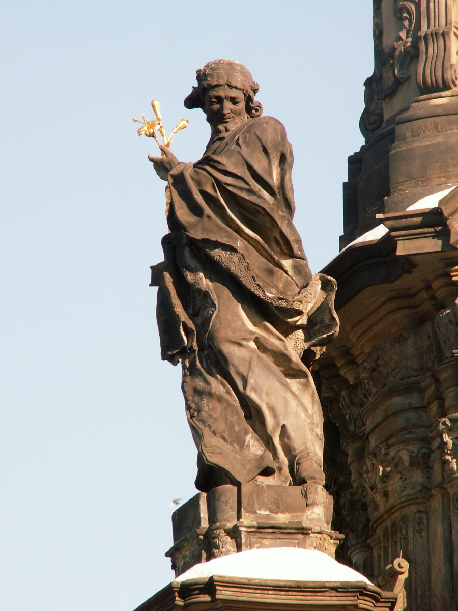
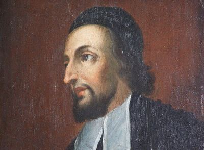
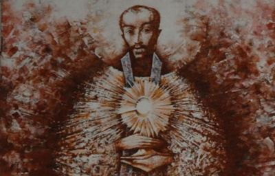

Misionari, pastiri i mistici (Pojedinačna proglašenja)
Biskupijski svećenik · Mučenik
Sv. Ivan Sarkander
1576. – 1620.
Biskupijski svećenik povezan sa Šleskom i Moravskom ostao je vjeran ispovjednoj tajni i u zatočeništvu. Njegova je služba protekla u vremenu kada su političke borbe i vjerski sporovi razdirali mjesne zajednice.

Izvor slike


Izvor slike


Izvor slike
- Spomendan
- 6. svibnja
- Zaštitništvo
- Nije navedeno u izvoru
- Životni vijek
- 1576. – 1620.
- Djelovanje
- Duhovno vodstvo i razlučivanje · Progoni i progonstvo · Mučeništvo
- Razdoblje
- 16., 17. stoljeće
- Slavi se
- 6. svibnja
Životopis
Sveti Ivan Sarkander bio je svećenik i mučenik čiji je život povezan sa Šleskom i Moravskom. U češkoj i poljskoj tradiciji poznat je kao Jan Sarkander. Živio je u vremenu kada su vjerski sporovi, borba za političku vlast i rat sve snažnije zadirali u život mjesnih zajednica. Katolička ga Crkva štuje zbog vjernosti svećeničkom pozivu i čuvanja ispovjedne tajne, koju nije htio povrijediti ni pod prijetnjom smrti.
Rođen je 20. prosinca 1576. u Skoczówu, šleskom gradu koji se danas nalazi u Poljskoj, a tada je pripadao zemljama Češke krune. Odrastao je u obitelji s više djece. Njegov je brat Nikola također postao svećenik. Nakon očeve smrti majka se s obitelji 1589. preselila u Příbor u Moravskoj. S tim je krajem povezan velik dio Ivanova daljnjeg života: školovanje, svećenička služba i naposljetku zatočeništvo u Olomoucu.
Školovao se u Olomoucu, gdje je upoznao isusovačko školstvo, koje je imalo važnu ulogu u katoličkoj obnovi toga vremena. Školovanje mu je poremetila epidemija kuge, zbog koje je olomoučko učilište prekinulo rad. Studij je nastavio u Pragu, gdje je 1603. dovršio filozofsku naobrazbu. Potom je u Grazu studirao teologiju. Njegov životni put u tim godinama uključivao je i razmatranje bračnoga života. Sačuvan je predbračni ugovor s Annom Plachetskom, no nije posve razjašnjeno je li brak doista sklopljen. Ivan se potom odlučio posvetiti svećeničkoj službi.
Za svećenika je zaređen 1609. u Brnu. Slijedile su godine služenja u moravskim župama, među kojima se navode Uničov, Charváty, Kroměříž, Zdounky i Boskovice. Godine 1616. postao je župnik u Holešovu. Ondje je djelovao u sredini s brojnim protestantskim stanovništvom. Propovijedao je, poučavao i nastojao učvrstiti katolički život svoje zajednice. U pastoralnom je radu surađivao s isusovcima, a njegovo je djelovanje podupirao katolički velikaš Ladislav Popel od Lobkovica, kojemu je bio i ispovjednik.
Takva je povezanost imala i teške posljedice u društvu u kojem su vjerska pripadnost i politički položaj često bili tijesno povezani. Potpora velikaša olakšavala je pastoralni rad, ali je svećenika mogla izložiti sumnji onih koji su njegovu zaštitniku bili politički protivnici. Ivanova župa nalazila se usred napetosti koje su nadilazile život jedne crkvene zajednice. Kada je 1618. započeo ustanak protiv habsburške vlasti, a s njim i Tridesetogodišnji rat, te su se napetosti pretvorile u otvoreni sukob.
U Moravskoj su vlast preuzeli staleži koji su se suprotstavljali Habsburgovcima. Ratne su prilike ugrozile položaj katoličkih svećenika, a sukobi su zahvatili i Holešov. Ivan je 1619. otišao u Poljsku. Hodočastio je Gospi u Čenstohovu i neko vrijeme boravio izvan župe. Njegov se boravak u Poljskoj poslije našao među razlozima zbog kojih su ga političke vlasti ispitivale. Ono što je on povezivao s hodočašćem, njegovi su protivnici tumačili u svjetlu mogućih vojnih dogovora.
Po povratku je nastavio služiti u Holešovu. Početkom 1620. Moravskom su prolazile poljske konjaničke postrojbe koje su podupirale carsku stranu. Njihov je prolazak bio praćen pljačkom i razaranjem. Prema katoličkim životopisima, Ivan im je izišao ususret u euharistijskoj procesiji s Presvetim Sakramentom, a Holešov je tom prilikom bio pošteđen. Ta je epizoda u njegovu štovanju ostala povezana s brigom za grad i pouzdanjem u Kristovu prisutnost. U tadašnjim je političkim okolnostima, međutim, pošteda grada mogla dodatno potaknuti sumnje u njegovu povezanost s vojskom.
Uhićen je i odveden u Olomouc pod optužbom za veleizdaju. Vlasti su nastojale utvrditi je li sudjelovao u dovođenju poljskih postrojbi u Moravsku ili znao za pripreme njihova dolaska. Njegova povezanost s Lobkovicem i boravak u Poljskoj postali su predmet ispitivanja. Optužbe su pripadale ratnom i političkom kontekstu; one same po sebi ne dokazuju da je Ivan organizirao vojni upad.
U crkvenim izvještajima o njegovu stradanju središnje mjesto zauzima zahtjev da otkrije ono što mu je Lobkovic možda povjerio u ispovijedi. Ivan je poricao da raspolaže traženim političkim podatcima. Istodobno je izjavljivao da ono što bi doznao u sakramentalnoj ispovijedi ne bi smio odati. Time nije potvrđivao da mu je takav plan bio povjeren, nego je odbijao da se ispovijed pretvori u sredstvo istrage.
U katoličkom shvaćanju ispovjedna tajna obvezuje svećenika da trajno čuva ono što je doznao kao ispovjednik. Za Ivana je ta obveza ostala na snazi i pred istražiteljima. Tijekom veljače 1620. više je puta bio teško mučen, ali nije pristao povrijediti tajnu sakramenta. Nakon ispitivanja ostao je u zatvoru, teško ozlijeđen. Umro je od posljedica mučenja 17. ožujka 1620., u četrdeset i četvrtoj godini života.
Sjećanje na njega sačuvalo se u krajevima u kojima je živio i služio. Mjesto njegova zatočeništva u Olomoucu postalo je mjestom štovanja, a poslije je ondje podignuta njemu posvećena kapela. Njegove se relikvije čuvaju u olomoučkoj katedrali svetoga Vjenceslava. Posebno je štovan u Moravskoj, Češkoj i Šleskoj, gdje se njegov život pamti u povezanosti s mjesnom crkvenom poviješću.
Postupak crkvenoga priznanja njegova mučeništva trajao je dugo. Papa Pio IX. proglasio ga je blaženim 6. svibnja 1860. Papa Ivan Pavao II. proglasio ga je svetim 21. svibnja 1995. u Olomoucu, za vrijeme apostolskoga pohoda Češkoj. Tako je grad njegova stradanja postao i mjesto svečanoga priznanja njegove svetosti. U češkom se crkvenom kalendaru slavi 6. svibnja, na obljetnicu beatifikacije; u dijelu životopisne i pobožne tradicije njegovo se ime veže i uz 17. ožujka, dan njegove smrti.
Kanonizacija je bila popraćena jasnim pozivom na pomirenje. Ivan Pavao II. govorio je o ratovima u kojima su nasilje činile i katoličke i protestantske vlasti. Sarkandera je promatrao među mnogim žrtvama takve povijesti. U Olomoucu je u ime katolika zatražio oproštenje za nepravde nanesene nekatolicima te izrazio oproštenje za nepravde koje su pretrpjeli katolici. Štovanje mučenika povezao je s nastojanjem da kršćani napuste naslijeđeno neprijateljstvo i zajedno slijede Krista.
Život i nasljeđe
Među izvorima o Sarkanderovu procesu osobito je važan izvještaj gradskoga suca Johanna Scintille. On je kao katolik morao biti nazočan ispitivanju te je poslije opisao postupak kardinalu Franzu von Dietrichsteinu. Takav dokument omogućuje razlikovati svjedočanstvo osobe povezane sa sudskim postupkom od kasnijega pobožnog pripovijedanja. U povijesti mučenika vrsta izvora posebno je važna jer se predaja o njegovoj postojanosti prenosila u sredinama koje su još dugo bile vjerski i politički podijeljene.
Stariji životopis navodi i Sarkanderov boravak uz zajednicu minima u Čenstohovi te nekoliko mjeseci provedenih u Krakovu. To dopunjuje sliku njegova poljskog putovanja. Nije svako izbivanje iz Holešova bilo vojno ili diplomatsko poslanje; boravak je uključivao hodočašće i povlačenje radi duhovnoga života. U kasnijoj je istrazi upravo kretanje preko granice postalo sumnjivo, što pokazuje kako su ratne vlasti mogle posve drukčije protumačiti putovanje svećenika.
Njegova suradnja s isusovcima proizlazila je iz mjesnoga uređenja škola i pastoralnih ustanova u Holešovu. Nije time postao član Družbe Isusove: ostao je biskupijski svećenik. Pripadnost istomu krugu katoličke obnove ne znači istu redovničku pripadnost. Ta je razlika važna kada se Sarkandera susreće uz isusovačke svece i njihove pratitelje.
Rani pokušaji beatifikacije nisu tekli bez prekida. Postupak započet za Benedikta XIV. dugo je ostao nedovršen, a službeno je zaključen tek u devetnaestom stoljeću. Između neposrednoga mjesnog štovanja i crkvenoga priznanja stajao je dug rad na svjedočanstvima. Zbog toga njegova kasnija kanonizacija nije nastanak uspomene, nego službeno prihvaćanje štovanja koje je stoljećima ostalo vezano uz mjesta njegove službe i stradanja.
Pročitaj više na izvornoj stranici ↗